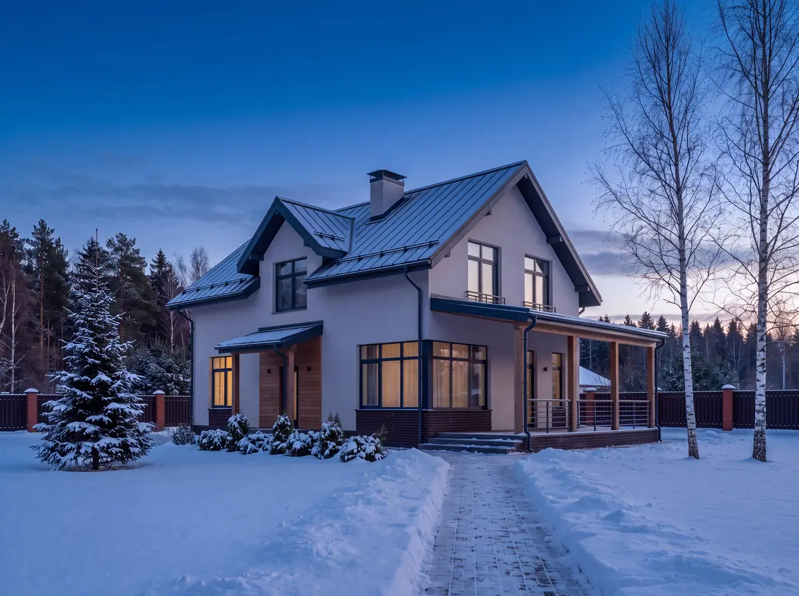


Новогодняя подсветка
дома под ключ
Украсим гирляндами фасад, кровлю и участок. Монтируют электрики: считаем нагрузку, подключаем через защиту, ставим таймер.
5 вопросов, 1 минута. Расчёт пришлём в мессенджер в течение часа.
- от 1 000 руб.за метр
- 1 деньна монтаж
- 36 месяцевгарантия
До монтажа
Так дом выглядит сейчас
Листайте - включим свет по частям.
Днём и вечером
Варианты подсветки: до и после
Один и тот же дом днём и вечером с подсветкой. Потяните ползунок.
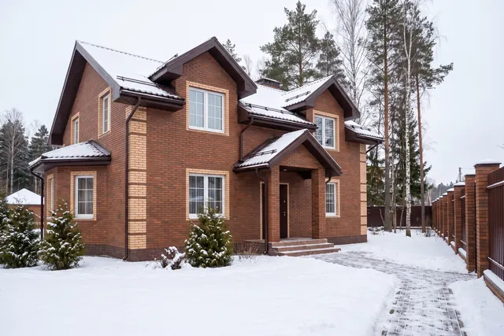
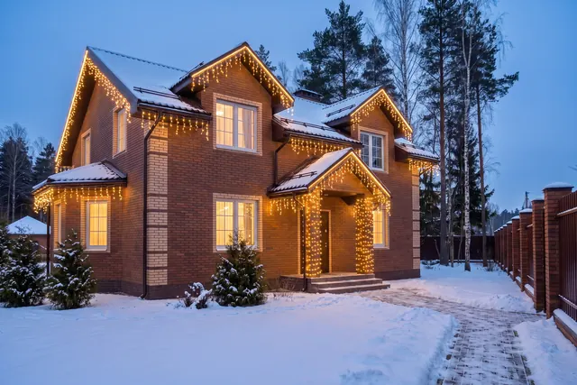
Кирпичный дом в два этажаБахрома по карнизам, контур кровли, вход. Тёплый белый свет. 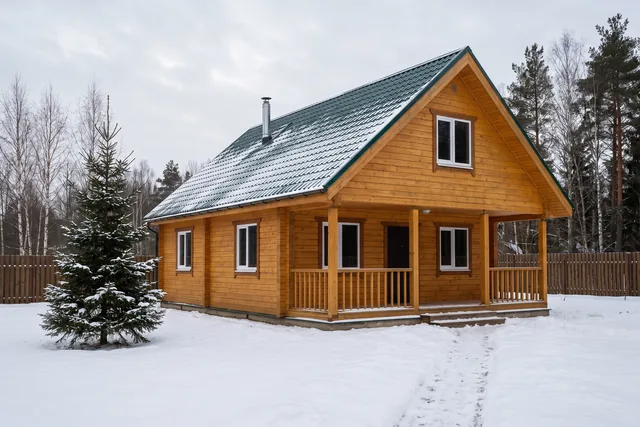
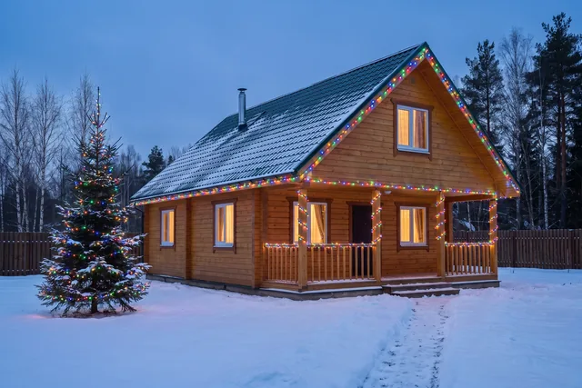
Дом из бруса с террасойКонтур кровли и фронтонов, терраса, ель в гирлянде. Разноцветные лампы. 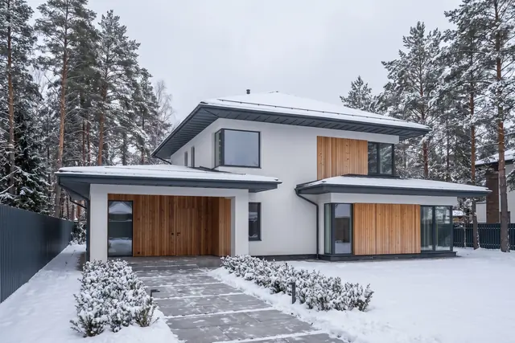
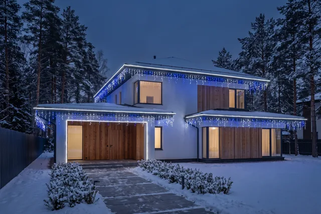
Современный домБахрома и контур кровли, вход. Холодный белый с синим. 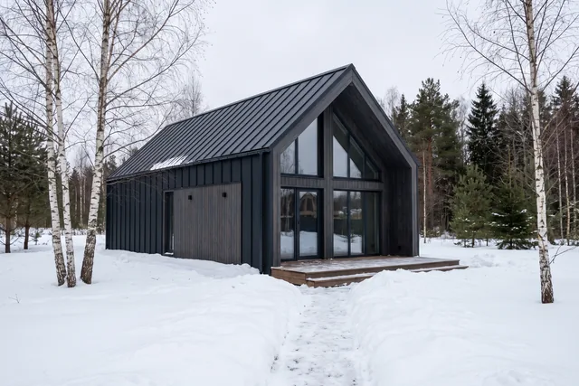
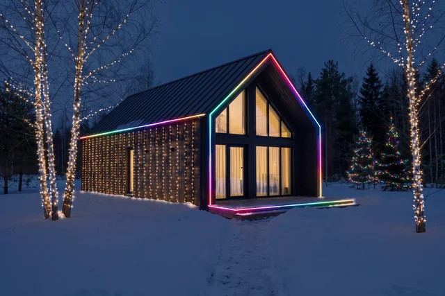
БарнхаусRGB-лента по контуру дома и террасы, световой занавес на стене, берёзы и ели в гирляндах. 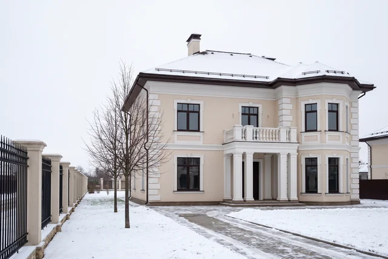
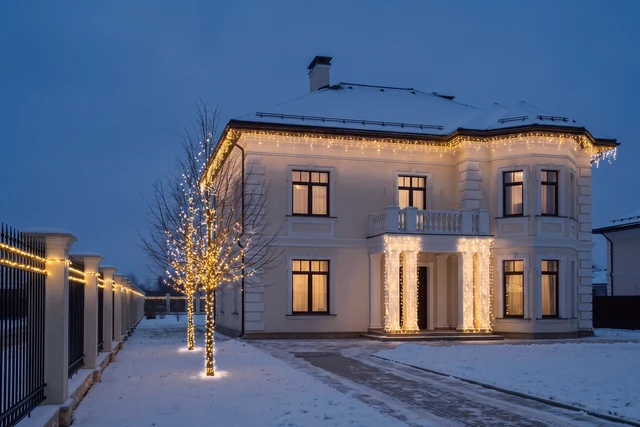
Большой дом с колоннамиСветовой занавес на колоннах, бахрома, деревья, ворота. 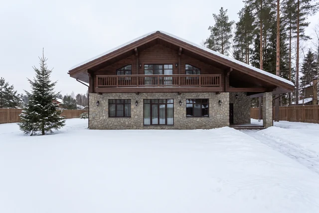
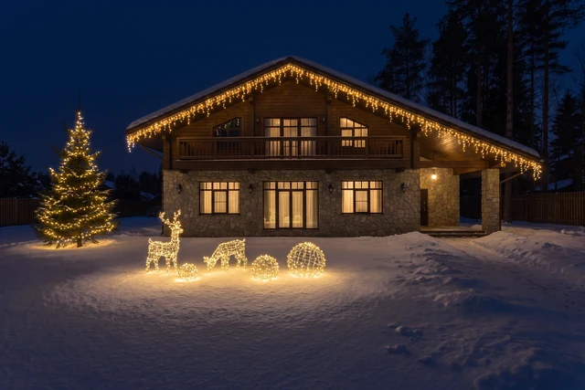
Дом с участкомБахрома, ель в гирлянде, световые фигуры: олени и шары.
Расчёт
Узнайте стоимость подсветки вашего дома
Ответьте на 5 вопросов. Пришлём расчёт и схему, где какие гирлянды.
- Время
- 5 вопросов, 1 минута
- Ответ
- в мессенджер в течение часа
- Подарок к заказу
- таймер или Wi-Fi-реле
Без выезда
Пришлите фото дома - посчитаем без выезда
Сфотографируйте дом с улицы и со двора и напишите, что хотите подсветить. Ответим с предварительной ценой в течение часа.
Визуализацию по фото делаем бесплатно, в день обращения. Точную смету даём после замера.
Или позвоните: +7 (967) 164-97-97, ежедневно с 9 до 21.
Под ключ
Что входит в работу
- Замер и схема. Где какие гирлянды и сколько метров. Замер бесплатно.
- Визуализация по фото. Покажем, как будет выглядеть ваш дом. Бесплатно, в день обращения.
- Гирлянды и крепёж. Привозим сами, уличные, с защитой от влаги.
- Монтаж на высоте. Кровля, фасад, деревья.
- Подключение к электрике. Отдельная линия, автомат и УЗО.
- Таймер или датчик. Свет включается сам, когда стемнеет.
- Демонтаж после праздников. Снимем и упакуем, цена в смете.
Гирлянды на доме - это электрика на улице
Снег, дождь, оттепели. Подсветка работает по 8-10 часов в день полтора месяца. Мы электромонтажная компания и подключаем её так же, как любую уличную линию.
- Считаем нагрузку Проверяем, потянет ли ваш щит, и не вешаем всё на одну розетку.
- Ставим защиту Отдельный автомат и УЗО: при замыкании отключится подсветка, а не весь дом.
- Не портим фасад Крепим на клипсы и трос, без дыр в кровле и отделке.
- Отвечаем по договору Цена и сроки в смете, гарантия на бумаге.
Как работаем
От заявки до включения - 4 шага
- Расчёт Присылаете фото или отвечаете на 5 вопросов. В течение часа называем предварительную цену.
- Замер Приезжаем, меряем, смотрим щит. Даём точную смету. Замер бесплатный.
- Договор Фиксируем цену и день монтажа.
- Монтаж Вешаем гирлянды, подключаем, настраиваем таймер, включаем при вас. Обычно 1 день, большие объекты 2-3 дня.
Договор
Что прописано в договоре
- Цена из сметы не меняется после подписания
- Гарантия 36 месяцев на гирлянды и монтаж
- Оплата после монтажа, по договору
Вопросы
Вопросы и ответы
Сколько стоит подсветка дома?
Зависит от длины контура, вида гирлянд и высоты. Цены - от 1 000 руб./м. Точную сумму называем после замера и фиксируем в смете.
Можно узнать цену без выезда?
Да. Пришлите фото дома в мессенджер - назовём предварительную цену. Точную смету даём после замера, замер бесплатный.
За сколько дней смонтируете?
Обычный дом - за 1 день. Большие объекты - 2-3 дня.
До какого числа принимаете заказы?
Монтируем до 25 декабря. В декабре свободных дней мало, лучше договориться заранее.
Гирлянды нужно снимать после праздников?
Снимем и упакуем сами. Цена демонтажа указана в смете.
Это безопасно? Гирлянды не загорятся?
Ставим уличные светодиодные гирлянды с защитой от влаги. Подключаем через автомат и УЗО: при любой неисправности линия отключится сама.
Какая гарантия?
36 месяцев на гирлянды и монтаж, по договору.
Как платить?
После монтажа, по договору.
Вы работаете в моём районе?
Истра и Новая Рига, Химки, Красногорск, Одинцовский округ, Звенигород, Дедовск, Солнечногорск, Зеленоград, Клин. Другой район - напишите, скажем сразу.
Оставьте телефон - посчитаем подсветку вашего дома
Перезвоним в течение часа, зададим пару вопросов и назовём цену.